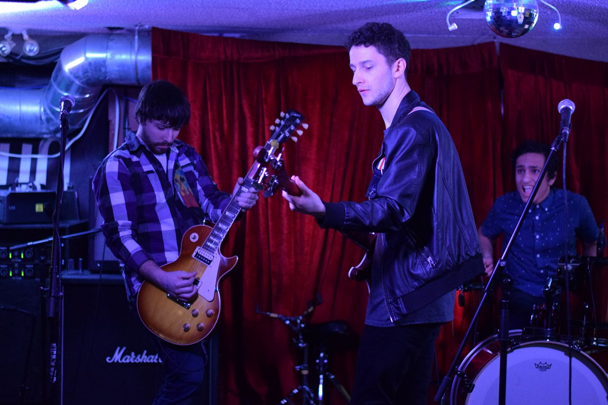
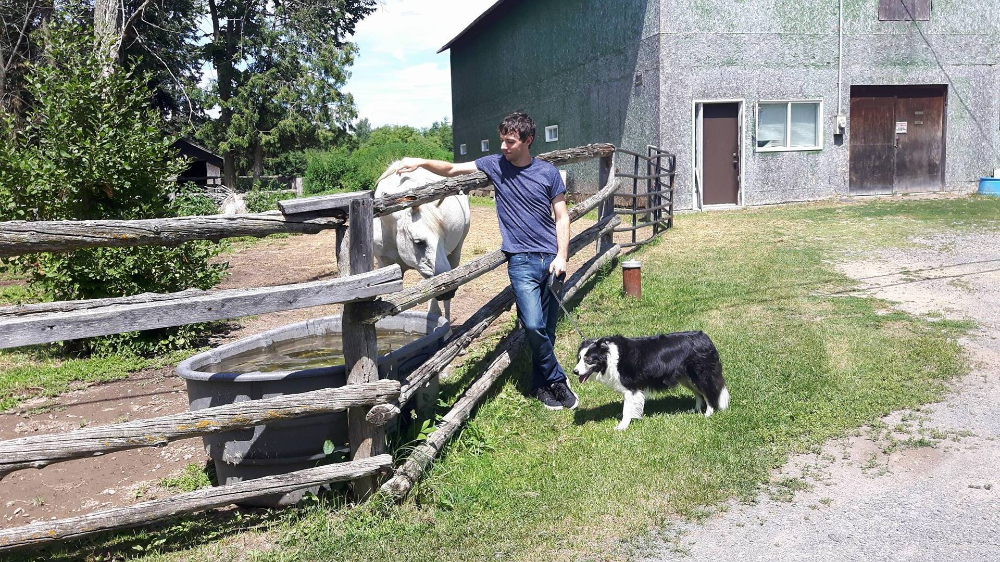
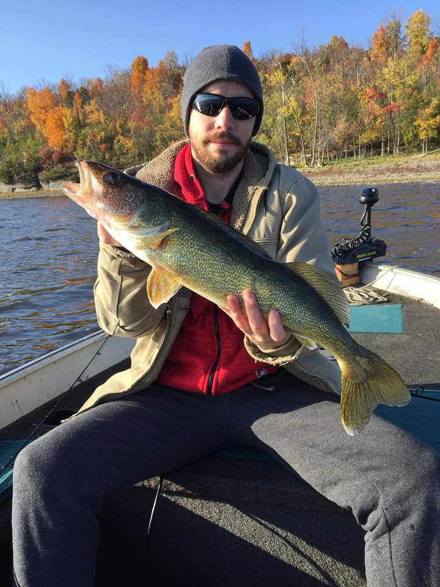
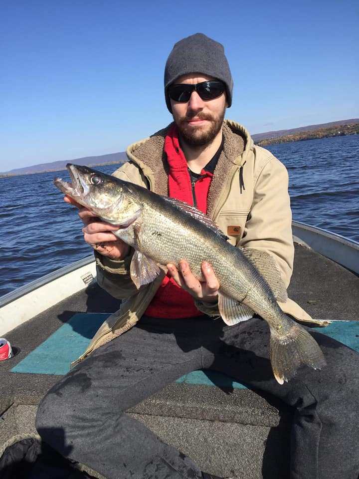

Personal Interests
    Visit my Facebook profile here!
Having come from two extremely musical families, music has always been a prominent part of Mr. Ryan's life. He has collaborated with multiple groups of people to write original music as well as cover some of his favorite bands. He has experience playing live at multiple venues in the Ottawa, Ontario area, but also greatly enjoys simply playing with friends at practice spaces. One of his greatest music related goals has been to create an amateur original album in a studio.
Mr. Ryan also has a very large passion for the outdoors. Ever since he was a child he enjoyed going camping with the family, fishing in lakes and rivers, and hiking on trails close to home. He has visited many of the provincial parks in Ontario and Quebec. Some of his favorite are Algonquin Park, Charleston Lake, Murphy's Point, and Bon Echo. This passion is what made him decide to pursue a career in the environmental industry.
Visit my front page here!